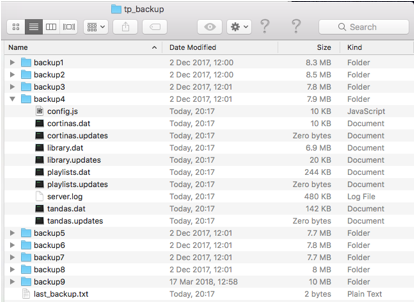

It is recommended that your main music library is NOT the USB memory stick! Instead you should maintain a proper library of files elsewhere and take a copy to use on the USB memory stick.
If the Tanda Player does not start properly after some time of waiting get the USB device checked out – it is likely to be currently ‘Read-Only’ and this prevents the Tanda Player from working.
By keeping the folder structure the same between the master library and the USB device there is no additional need to back these files up as they can always be re-copied – and copying 100Gbytes of files takes a long time!
The only files you really need to periodically take a copy of are all the “*.dat” or “*.updates” files that are created and used at the top level of the USB memory stick. These are plain text JSON format(ish) data files which the system uses all the time. Some files are just fragments of data waiting to be recombined with the main library files. The Tanda Player automatically backs up these files each time it starts up saving the last sessions data before making any new changes.
However, USB memory sticks do not last forever and combined with the Tanda Players heavy use of them the backup the Tanda Player creates on the USB is not the best place and so you should copy all the files at the top level of the USB memory stick onto a PC or another USB device. You could also copy the last 10 backups folder “tp_backup”.
The following image shows the backup folder’s contents and has expanded backup 4 to show the key files that get backed up.
The last back up folder used is stored as a simple number in the “last_backup.txt” file. If corruption has occurred there is a strong likelihood that the previous backup will be corrupt and so you may wish to go back one or two to find a good working version to recover from.
To recover, simply copy these files to the top level again and re-start the Tanda Player.
Note that when the 10th backup is to be created it overwrites the first one and so it goes on like this forever. So if the last backup taken is number one then the previous one is number 9 and before that 8 etc.

Once your library has stabilized it may be worthwhile taking a complete copy onto a second USB memory stick so that you can always swap them over should one start to play up – and it will.
The Tanda Player is a real computer and as such it does not like it when power is just disconnected because it can be holding some information in memory that will be copied to the USB device at some point. If the power is removed, these files can be left in a corrupted state. For this reason, make sure you
ALWAYS USE THE POWER OFF BUTTON ON THE MAIN HOME PAGE
Using this button to stop will copy any cached data to disk and then safely un-mount the USB memory stick so that is ready to use in another computer or next time you start the Tanda Player.
The shutdown process takes about 25 seconds after this button is pressed.
A 25 second countdown is provided to help ensure you do not disconnect too early!
Disconnecting before full shutdown has occurred may result in corruption of your USB device.